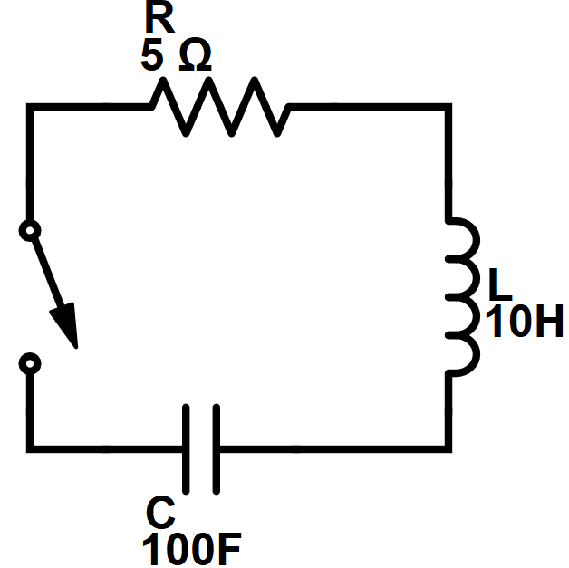

This page is currently under construction. Please view this project on GitHub.
An RLC circuit is a circuit that contains resistive (R), inductive (L), and capacitive (C) elements. The inductive and capacitive elements of the circuit cause the current around the loop to oscillate. The resistive element of the circuit attenuates the oscillations, decreasing their magnitude over time. A diagram of this circuit is shown below:
This simulation approximates the natural response of the circuit using Euler's method.
The natural response is the behavior of the circuit when the open switch is closed and the circuit is completed.
The initial conditions for this simulation are a charge on the capacitor to a potential of 50 V.
As charge cannot flow instantaneously, the initial current through the circuit is 0 A.
Due to Kirchoff's Voltage Law, the voltage across the inductor is equal to the voltage across the capacitor (50 V).
As the voltage across an inductor is equal to its inductance multiplied by the derivative of current, the initial rate of change of current is 5 A/s.
The output of this simulation is displayed as a current-time plot below:
The script to perform this calculation is available below: